Non-Profit Redesign
San Antonio Humane Society

Project Overview
To build a meaningful and heartfelt user
interface from a clear and deliberate
brand voice for a non profit orginization.
My group and I decided on the SA Humane Society.
My Role
This was a group collaboration, so we all
shared the responsibility of all of the steps
on this project.
Proto-Persona
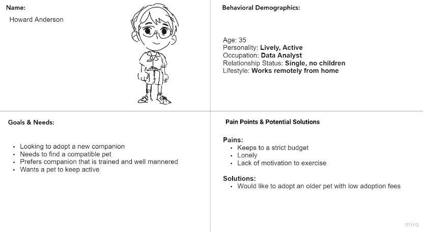Interview Plan
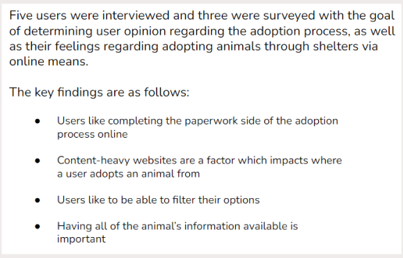Interview Insights
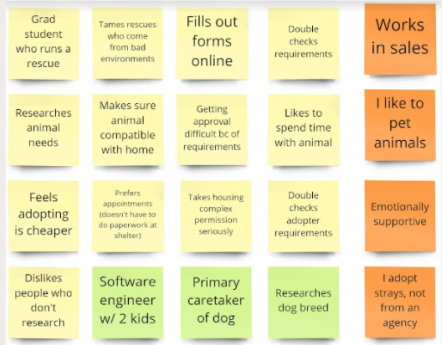 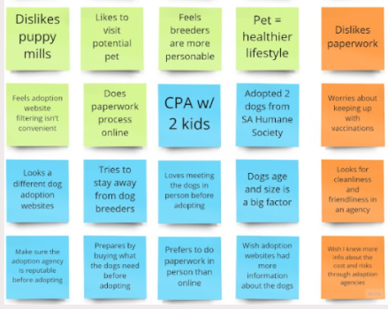Affinity Diagram
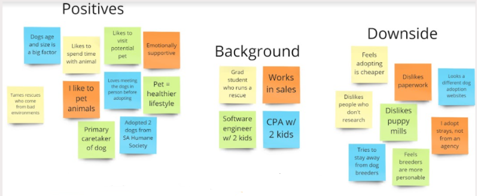 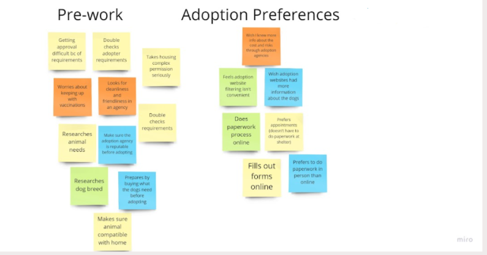User-Persona
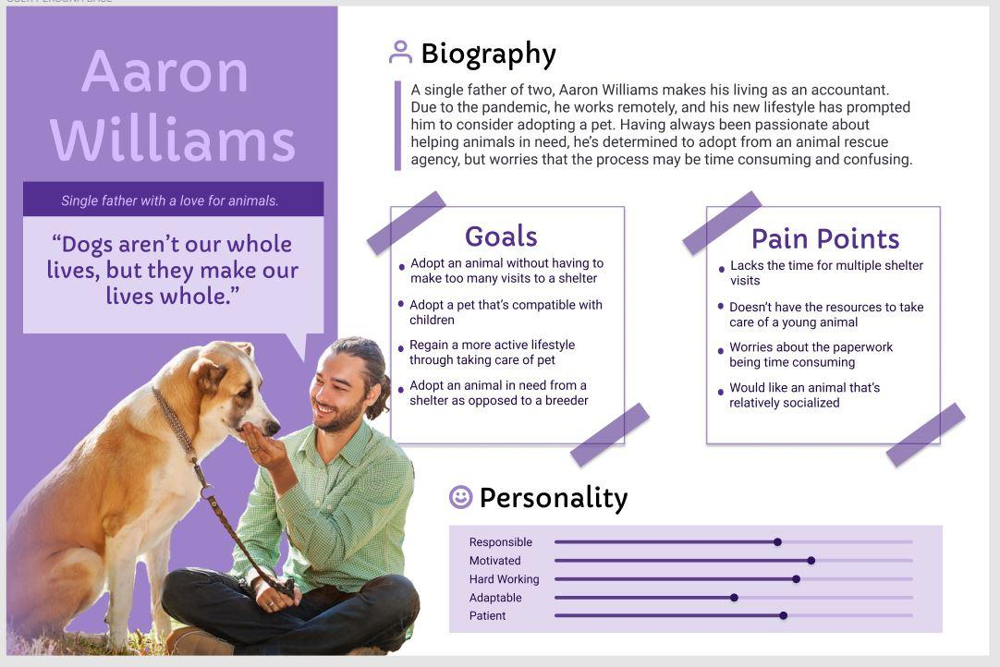User Insight
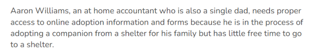Problem Statement
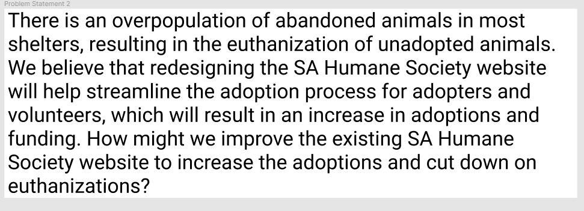User Scenario
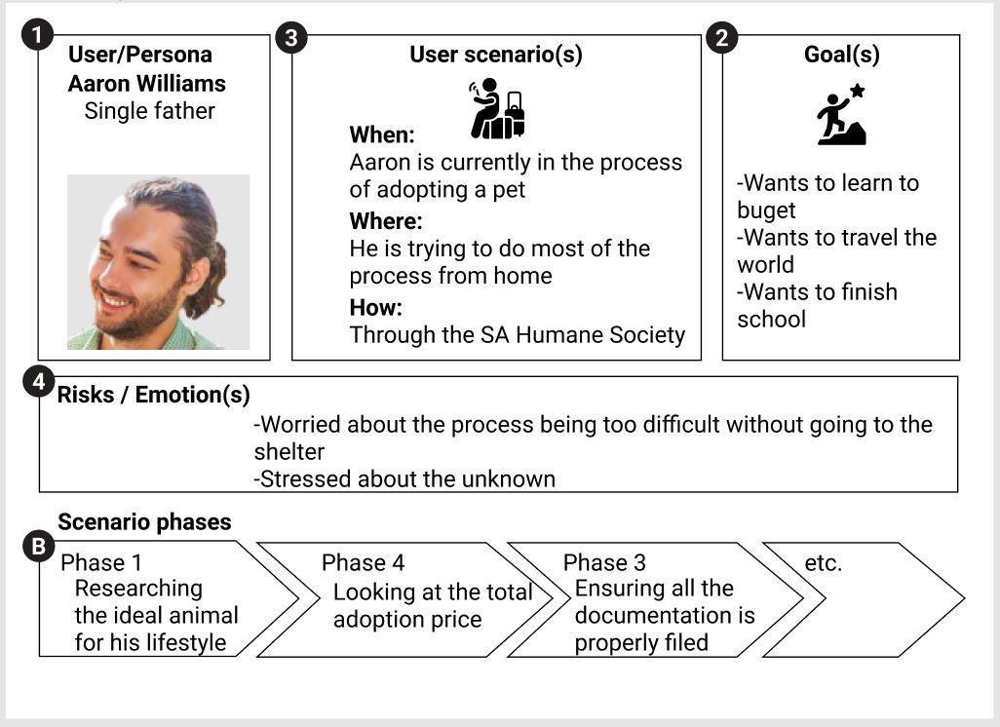Story Board
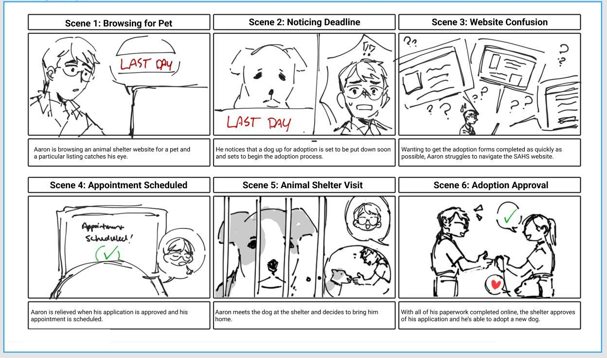Journey Map
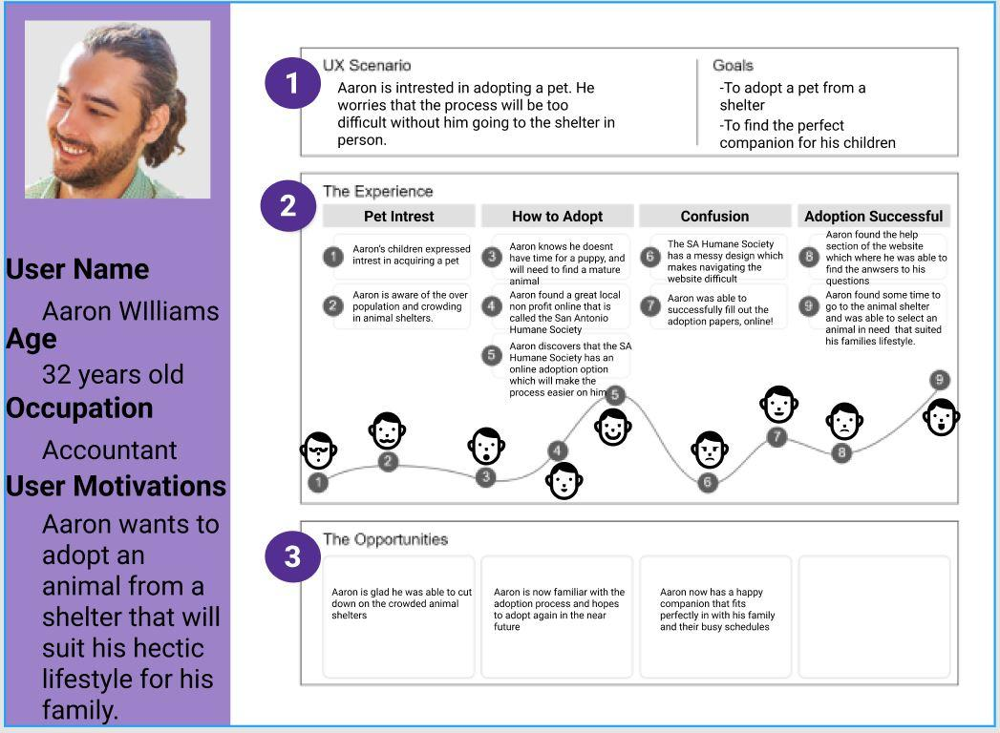Value Proposition
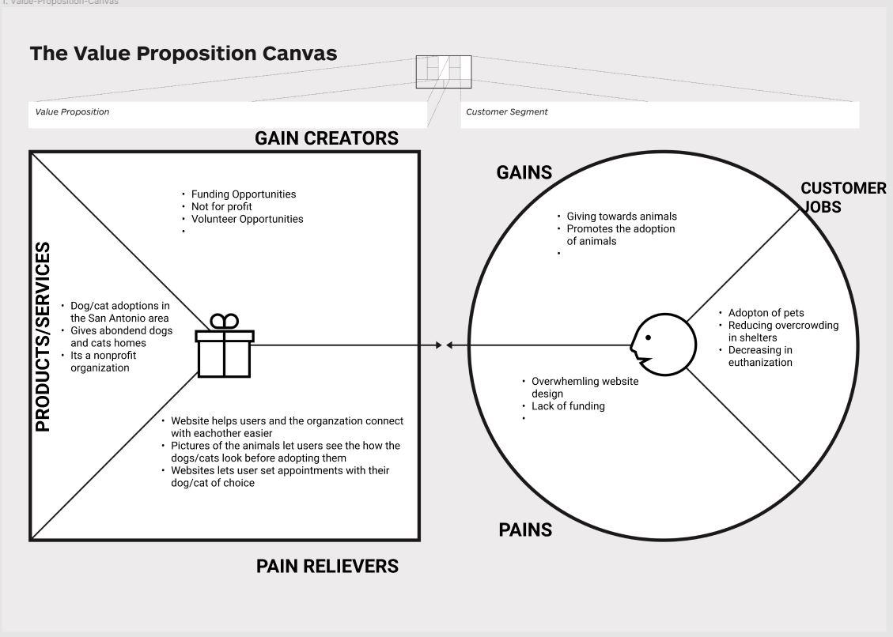User Flow
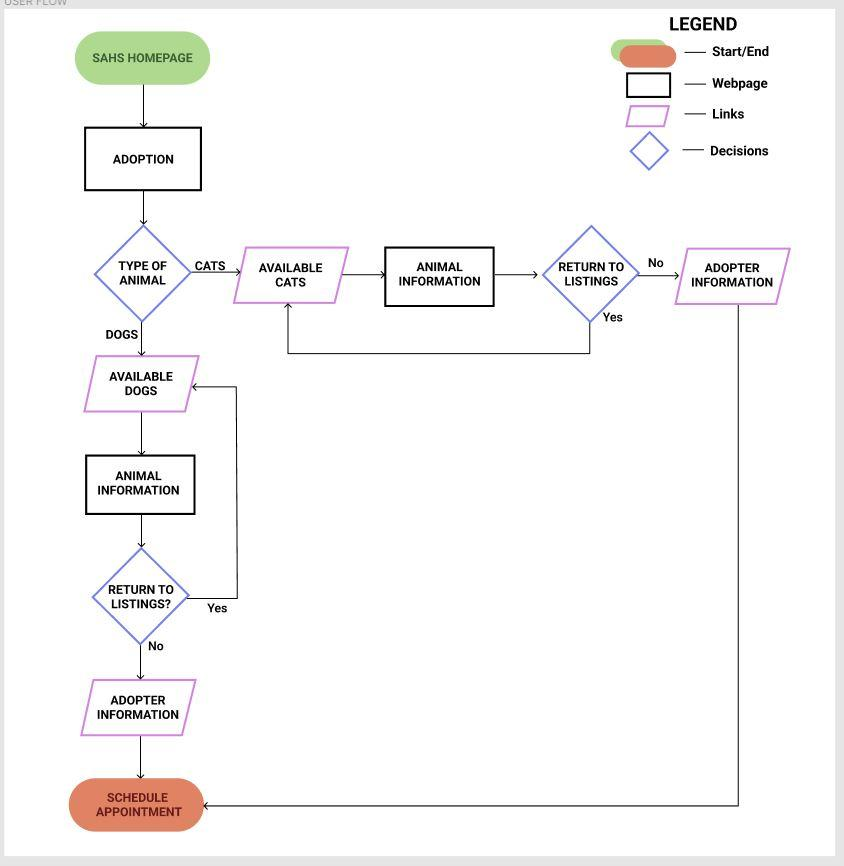Sketches
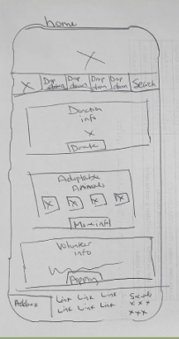 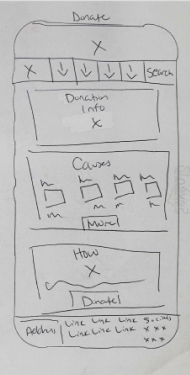 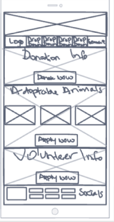 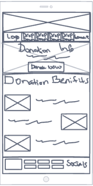 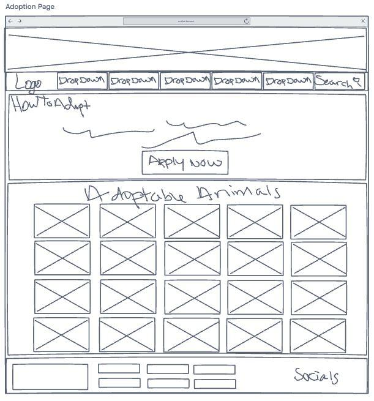 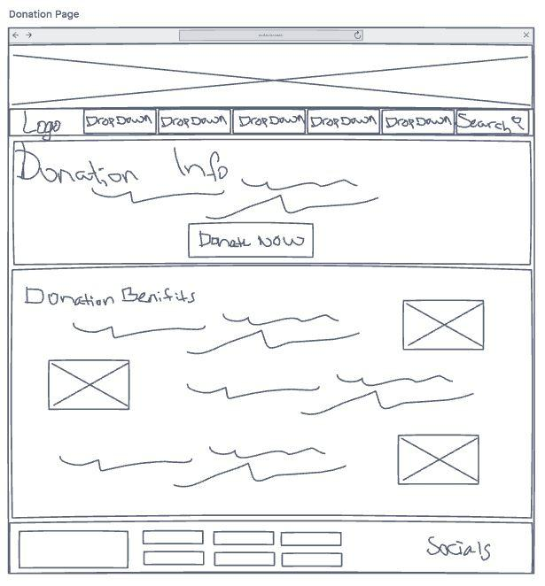 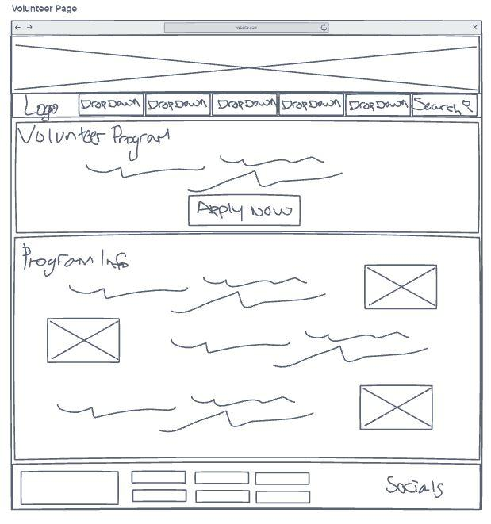

Card Sorting
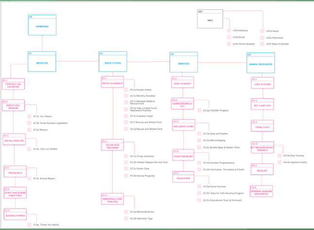Mid-Fi
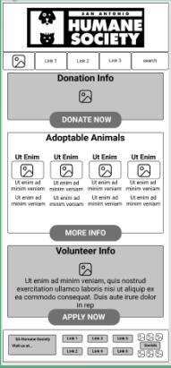 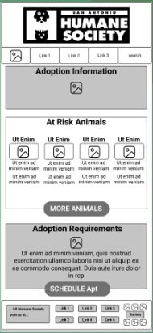 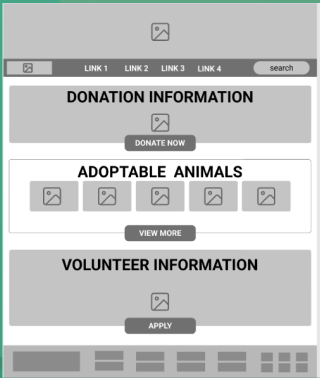 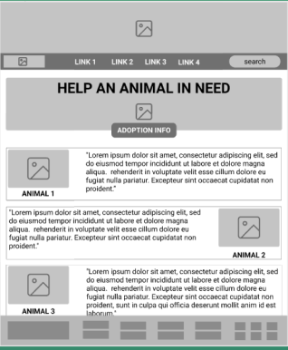Hi-Fi
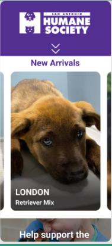 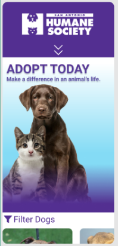 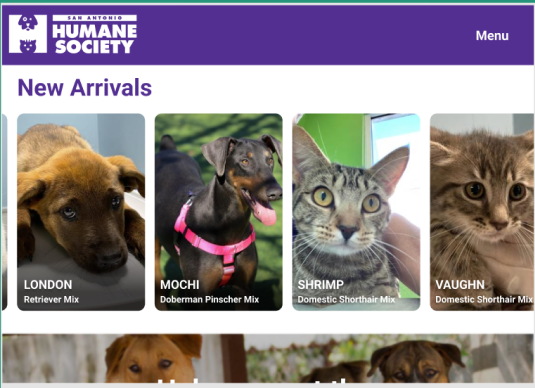 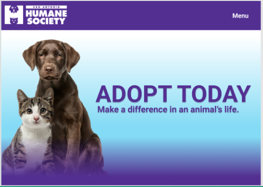 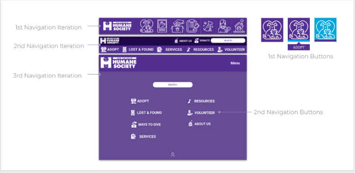 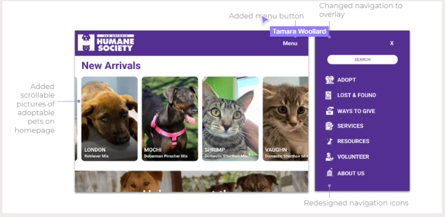For the future, we want to add more adoptable pets to our list, beef up our donation pages, and add more donor informaiton, make the search bar useable, and add more pages to our navigation bar to make it more navigational. Overall, our team worked hard together and completed a ton of work in a limited amount of time. I personally learned alot about the redesign process. It was important to be open to the opinions and reasonings of our group, as well as taking user feedback into concideration. I am glad to be able to use the knowledge I gained in future projects and I thank my team for that.